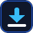

NovaLoad Bridge
Edge
Local Handoff Endpoint
Pairing Token (x-novaload-token)
Automatically intercept browser downloads
Save Settings
Test Connection
Find your desktop port and token inside NovaLoad -> Browser Bridge.